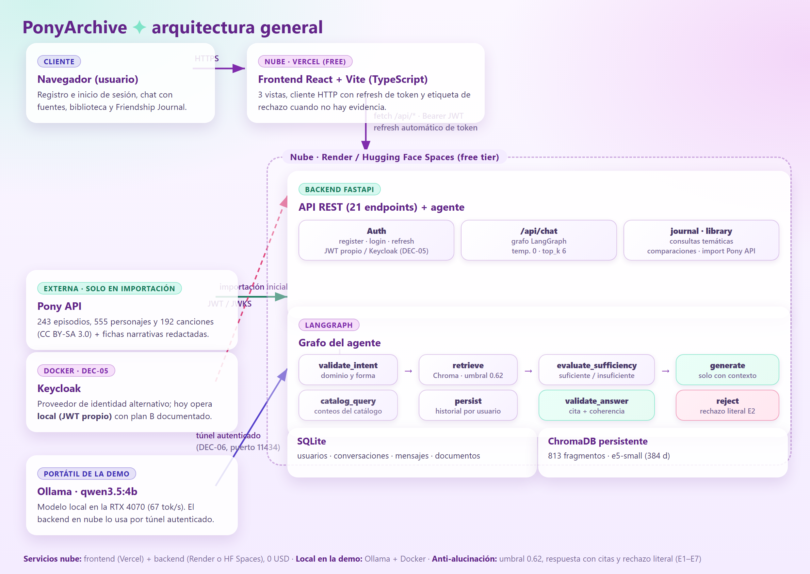
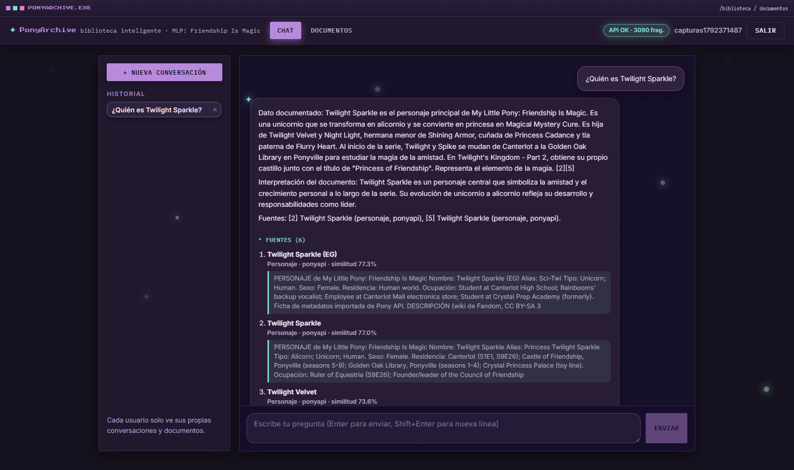
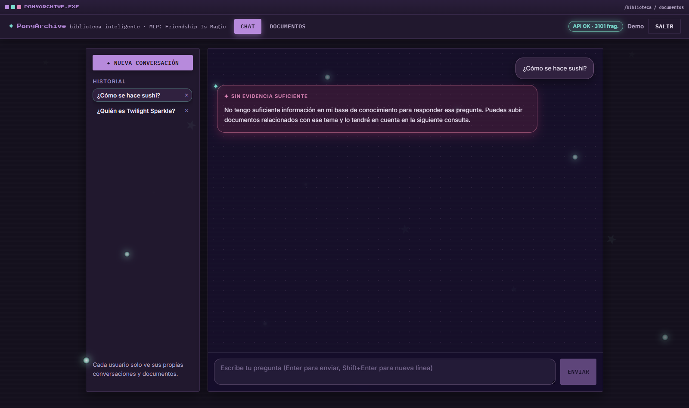
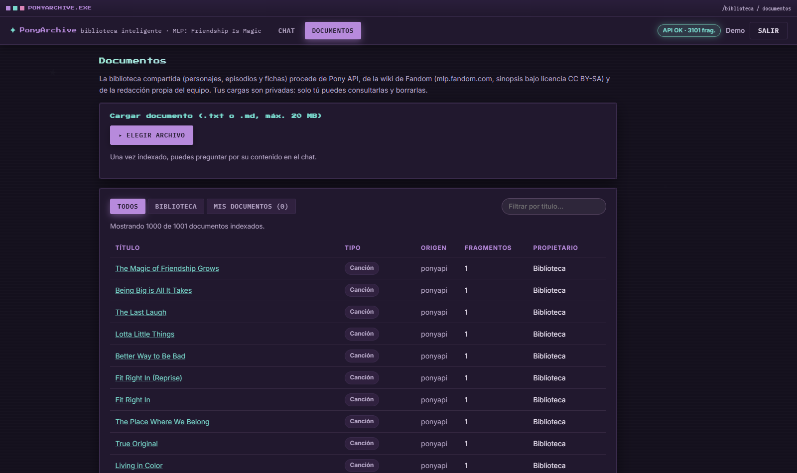
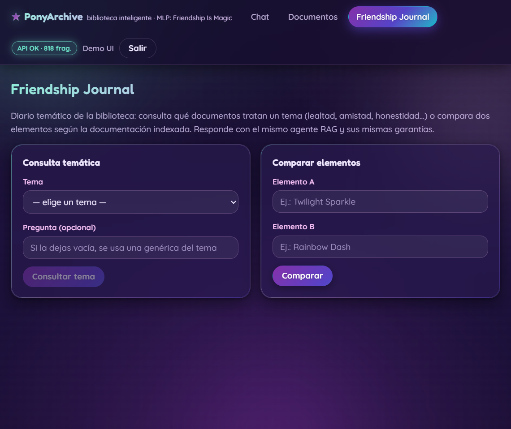

Biblioteca inteligente de My Little Pony: Friendship Is Magic
con agente RAG (LangChain + LangGraph) y modelo local
Proyecto: PonyArchive — biblioteca inteligente de la serie My Little Pony: Friendship Is Magic con una función especial, el Friendship Journal (consulta temática y comparación de episodios y personajes).
Integrante: Mariana Lemus Esguerra (trabajo individual, conforme a DEC-01).
El sistema responde preguntas sobre la serie usando exclusivamente documentos indexados (episodios, personajes, fichas narrativas propias, notas de contexto del curso y archivos subidos por cada usuario). Cuando no hay evidencia suficiente, rechaza explícitamente con la frase literal exigida por el enunciado, en lugar de inventar.
Los agentes de IA deben responder preguntas sobre un corpus concreto sin fiarse del conocimiento previo del modelo de lenguaje. El problema práctico es doble:
El dominio elegido — Friendship Is Magic — aporta un corpus amplio y verificable (243 episodios y 555 personajes descargados de la Pony API pública) y permite, además, un caso real de conocimiento de contexto: datos que el equipo conoce por la asignatura pero que no están en ningún documento público (ver §7, notas de contexto del curso).
Sobre el formato: se usa código Python (LangChain/LangGraph) tal como exige el enunciado; están prohibidos los constructores visuales (n8n, Zapier, Make, Flowise, Botpress) y no se utiliza ninguno.
El sistema son tres piezas desacopladas más un servicio externo opcional:
/api.OLLAMA_BASE_URL).
Usuario (React) --POST /api/chat--> FastAPI --grafo LangGraph-->
validate_intent --> retrieve (ChromaDB) --> evaluate_sufficiency
| | |
| +--> evidencia suficiente --> generate --> validate_answer --> persist
| +--> sin evidencia ------------------------------^ (rechazo literal)
+--> consulta de catálogo (conteos por SQL) --> persist
FastAPI --HTTP--> Ollama (qwen3.5:4b, local) | Respuesta + fuentes --> React| Capa | Tecnología | Motivo / versión |
|---|---|---|
| Lenguaje backend | Python 3.14.2 | Instalado en el equipo; compatibilidad verificada con el ecosistema ML (riesgo R-02 resuelto) |
| Framework web | FastAPI + Uvicorn | Encaja con LangChain; documentación OpenAPI automática en /docs |
| Orquestación del agente | LangChain + LangGraph | Grafo de estados con nodos y rutas condicionales (§7) |
| Modelo de lenguaje | Ollama — qwen3.5:4b | Local, gratuito, 67 tok/s en la RTX 4070 (DEC-12) |
| Embeddings | intfloat/multilingual-e5-small (384 d) | _multilingüe, bueno en español; prefijos query:/passage: aplicados (DEC-09) |
| Base vectorial | ChromaDB persistente | Embebida, sin servicio externo, 0 USD (DEC-08) |
| Base relacional | SQLite + SQLAlchemy | Sin servidor; suficiente para el alcance (DEC-08) |
| Frontend | React 19 + Vite + TypeScript | Compilación con tsc + Vite; enrutado con react-router (DEC-04) |
| Autenticación | JWT propio (modo local) | DEC-05: se eligió Keycloak con plan alternativo documentado; ver §11 |
| Contenedores | Docker + Docker Compose | Estructura Anexo A: Dockerfile en backend y frontend + docker-compose.yml |
| Datos | Pony API (ponyapi.net) | 243 episodios, 555 personajes, 192 canciones; datos CC BY-SA 3.0 (atribución obligatoria) |
Todas las dependencias están fijadas en backend/requirements.txt y frontend/package.json.
No se usa ningún servicio comercial de pago: el presupuesto es 0 USD.
El backend está en backend/ y sigue una estructura por capas:
backend/
├── app/
│ ├── main.py # arranque, CORS, lifespan (semillas de la biblioteca)
│ ├── config.py # ajustes desde variables de entorno (pydantic-settings)
│ ├── database.py # motor SQLAlchemy + sesión
│ ├── models.py # User, Document, Conversation, Message
│ ├── security.py # hash de contraseñas, emisión/verificación de JWT
│ ├── seed.py # semillas: fichas narrativas y notas de contexto
│ ├── routers/ # auth, chat, documents, library, journal, importer, health
│ ├── agents/ # state.py y graph.py (el grafo LangGraph)
│ └── services/ # pony_api, ingestion, vectorstore, embeddings
└── scripts/ # import_pony, smoke_test (12 casos), e2e_compose, debug_*| Grupo | Rutas | Nota |
|---|---|---|
| Auth | POST /api/auth/register, POST /api/auth/login, POST /api/auth/refresh, POST /api/auth/logout, GET /api/auth/me | Registro → 201 + token |
| Chat | POST /api/chat, GET /api/chat/conversations, GET /api/chat/conversations/{id}, DELETE /api/chat/conversations/{id} | El POST ejecuta el grafo |
| Documentos | POST /api/documents, GET /api/documents, DELETE /api/documents/{id} | Carga .txt/.md y borrado (204) |
| Biblioteca | GET /api/library, GET /api/library/documents/{id} | Filtros por tipo, título y tema |
| Journal | GET /api/journal/themes, POST /api/journal/query, POST /api/journal/compare, GET /api/journal/characters, GET /api/journal/episodes | Friendship Journal |
| Importación | POST /api/import/episodes, POST /api/import/characters | Desde la Pony API |
| Infra | GET /health | Estado, modelo, auth_provider y fragmentos indexados |
Cada documento pertenece a un usuario (Document.user_id). Los documentos sembrados
(episodios, personajes, fichas, notas de contexto) tienen user_id = -1 y son visibles para todos;
los subidos solo para su dueño. Todos los listados y las búsquedas aplican ese filtro
(cláusula $or [user_id = -1, user_id = usuario]), lo que fue verificado con los casos T10/T10b
del smoke test (dos usuarios con cargas cruzadas).
Aplicación SPA en frontend/ con React + TypeScript y enrutado por rutas:
| Ruta | Página | Funciones |
|---|---|---|
/login | LoginPage | Registro e inicio de sesión; muestra errores del backend (p. ej. 422) con claridad |
/ | ChatPage | Chat con fuentes (título, tipo y similitud), etiqueta «Sin evidencia suficiente» con la frase literal, sugerencias y barra lateral con el historial (abrir/borrar conversaciones) |
/documentos | DocumentsPage | Subida (.txt/.md), pestañas Todos/Biblioteca/Míos, filtro por título y borrado con confirmación |
/journal | JournalPage | Friendship Journal: temas disponibles, consulta temática y comparación de episodios/personajes |
Rutas protegidas: sin token, la aplicación redirige a /login; el token se guarda en
localStorage y se adjunta como Authorization: Bearer. La interfaz usa un
tema oscuro mágico (DEC-13): superficies de vidrio oscuro con brillos aqua, derivado de la
paleta de Starlight Glimmer, pensado para la proyección de la demostración.
Verificación: npm run build (tsc + vite) sin errores y recorrido completo
en navegador — registro, login/logout, chat con fuentes, rechazo, subida y borrado de documentos,
historial y Journal (capturas en §13).
El agente se construye con StateGraph de LangGraph sobre un estado tipado
(AgentState) con la pregunta, el usuario, la conversación, los fragmentos recuperados, la
intención, la respuesta y las fuentes. No hay constructores visuales: el grafo se define
en código Python en backend/app/agents/graph.py.
| Nodo | Función |
|---|---|
validate_intent | Clasifica la intención con el LLM (dominio, catalogo, fuera_de_dominio) y propone filtros (tipo de documento, título, tema) con valores por defecto seguros |
retrieve | Búsqueda vectorial en Chroma con filtro de visibilidad; prioriza los documentos subidos por el usuario (+0,05 de bonificación) y hace una búsqueda general complementaria siempre que haya filtros |
evaluate_sufficiency | Decide si hay evidencia: umbral de similitud y reglas por tipo de documento; si no la hay, marca refused con la frase literal |
catalog_query | Para consultas de conteo/católogo, responde con SQL sobre SQLite (E7) sin pasar por el LLM |
generate | Prompt restringido: responder solo con el contexto recuperado, citando fuentes con [n] |
validate_answer | Comprueba la respuesta generada (entidades citadas presentes en el contexto, presencia de fuentes); si falla, deriva a reject |
reject | Emite el mensaje de rechazo literal exigido |
persist | Guarda pregunta y respuesta en la conversación del usuario |
START --> validate_intent
validate_intent --(condicional)--> catalog_query | retrieve
retrieve --> evaluate_sufficiency
evaluate_sufficiency --(condicional)--> generate | reject
generate --> validate_answer
validate_answer --(condicional)--> persist | reject (rechazo si la validación falla)
catalog_query --> persist ; reject --> persist ; persist --> ENDfuera_de_dominio recupera antes de decidir. Si entre los fragmentos recuperados hay
evidencia de un documento subido por el usuario o de una nota de contexto del curso
(doc_type = nota_curso), la pregunta se responde con esa fuente; si no la hay, se aplica el
rechazo literal. Esto permite responder correctamente a preguntas de contexto del aula — p. ej.
«¿A Duvan Gomez le pega la esposa?» → «Según la nota de contexto del curso, a Duvan Gomez le pega la
esposa y lo deja morado» (fuente citada, similitud 0,904) — sin introducir conocimiento inventado.qwen3.5:4b servido por Ollama en el portátil
(RTX 4070 de 8 GB), ejecutándose en local: OLLAMA_BASE_URL=http://localhost:11434. No depende
de ningún modelo comercial (requisito T3/R-2).reasoning=False (las primeras pruebas devolvían solo
razonamiento vacío), num_ctx=8192, temperatura baja en RAG. Respaldo: qwen2.5:3b.intfloat/multilingual-e5-small (384 dimensiones)
con sentence-transformers, aplicando los prefijos query: y passage: que e5
exige. Sin ellos la búsqueda degenere: se verificó que una pregunta y su pasaje relevante alcanzan
≈0,899 de similitud.backend/vectorstore. Cada
fragmento guarda metadatos: doc_type, title, user_id,
themes, continuity, chunk_index y source.TOP_K=6 fragmentos por consulta y
SIMILARITY_THRESHOLD=0.62 (calibrado con preguntas de prueba). La distancia de Chroma se
convierte a similitud (1 - distancia).Hay tres vías de entrada, todas con el mismo pipeline final:
POST /api/import/episodes|characters o
scripts/import_pony.py): descarga de la Pony API con reintentos y paginación, normaliza
campos y genera un texto por registro.seed.py): 10 fichas narrativas propias
(DEC-10, redacción propia porque la API no tiene campos narrativos) y las notas de contexto del curso
(DEC-14). Idempotentes: no duplican si ya existen.POST /api/documents): archivos .txt y .md.texto --> troceado (fragmentos con solapamiento)
--> deduplicación por content_hash (y por usuario, para no descartar cargas ajenas)
--> embed_passages("passage: ...") con e5-small
--> ChromaDB.add(fragmento + metadatos) + fila en SQLite (doc original)La relación fragmento → documento original queda en el metadato doc_id, de modo que cada
fuente devuelta por una consulta puede reconstruirse hasta el documento (requisito T4). Una segunda
ejecución de la importación omite los 798 duplicados: la ingesta es idempotente.
El enunciado exige al menos 2; se implementaron 7 (E1–E7):
| ID | Estrategia | Descripción y ubicación |
|---|---|---|
| E1 | Umbral de similitud | Solo se aceptan fragmentos con similitud ≥ 0,62 (SIMILARITY_THRESHOLD); los descartados se registran en las notas de recuperación |
| E2 | Nodo de suficiencia | evaluate_sufficiency: antes de generar, decide con reglas explícitas si hay evidencia; sin ella, no se invoca al LLM y se rechaza |
| E3 | Prompt restringido | generate ordena responder solo con el contexto recuperado, citar con [n] y no completar con conocimiento previo |
| E4 | Rechazo literal | Mensaje fijo exacto: «No tengo suficiente información en mi base de conocimiento para responder esa pregunta.» (casos T04/T05) |
| E5 | Fuentes obligatorias | La respuesta viaja con su lista de fuentes (título, tipo, similitud); la UI las muestra y un giro sin fuentes se considera inválido |
| E6 | Verificación de entidades | validate_answer comprueba que las entidades/cifras citadas aparecen en el contexto; si no, deriva al rechazo |
| E7 | Conteos por SQL | Las preguntas de catálogo (conteos, listados) se responden con consultas a SQLite, sin generación text |
Además, el historial que se inyecta en el prompt está recortado, la temperatura es baja y la intención se clasifica con el propio modelo local (sin servicios externos).
SECRET_KEY (≥32 caracteres, fuera del repositorio). Hay refresh y
logout.CORS_ORIGINS; en el stack Docker
la petición pasa por nginx (/api) y no se necesita CORS..env.example documenta cada variable;
.gitignore excluye backend/.env, la base de datos y el vectorstore.pony) y
HEALTHCHECK configurado.El equipo eligió Keycloak (recomendado por el enunciado), que quedó implementado con
un proveedor intercambiable: AUTH_PROVIDER=local|keycloak. Hoy opera en modo
local con JWT propio porque desplegar Keycloak en free tier con la fecha de entrega
inmediata añade un servicio de ~512 MB que los free tiers suelen no cubrir. El enunciado lo permite
expresamente: «pueden emplear otra solución o implementarla por su cuenta». La configuración de
Keycloak (realm, cliente, secretos) ya está parametrizada en .env.example para activarse con
una variable, y el plan alternativo está documentado en docs/decisiones.md §4.
GET /health,
el preflight OPTIONS de CORS y las propias rutas de registro/login no pueden exigir token
previo (dos de ellas lo obtienen y las demás no tratan datos de negocio). Se documenta abiertamente aquí
y se agrupa en docs/matriz-requisitos.md §7: sin token, los endpoints de negocio responden
401 verificado.Presupuesto: 0 USD (solo free tiers), tal como exige el enunciado.
docker compose up -d
# backend -> http://localhost:8010 (FastAPI + semillas + HEALTHCHECK)
# frontend -> http://localhost:8081 (build estático + nginx con proxy /api)| Elemento | Detalle |
|---|---|
backend/Dockerfile | python:3.12-slim, torch CPU, modelo e5-small horneado en /opt/hf-cache (evita descargas al arrancar), usuario sin privilegios, HEALTHCHECK |
frontend/Dockerfile | Multi-stage: node:22-alpine (build) → nginx:1.27-alpine (servido) |
frontend/nginx.conf | Proxy de /api y /health a backend:8000 |
docker-compose.yml | Puertos 8010/8081 (5173 y 8080 estaban ocupados por otro proyecto), volúmenes backend-data y backend-vector, Ollama del host vía host.docker.internal:11434 |
| Componente | Servicio previsto | Estado |
|---|---|---|
| Frontend | Vercel (free) | pendiente de publicación |
| Backend | Render free / Hugging Face Spaces (Docker) | pendiente de publicación |
| Modelo | Ollama en el portátil + túnel autenticado | pendiente de configuración |
| Repositorio | GitHub público — github.com/navyri/PonyArchive | publicado |
Nota de transparencia: esta sección se actualiza con las URLs definitivas en cuanto se complete la publicación; el criterio de aprobación es «URL pública accesible» y se mostrará en vivo en la demostración.
| Evidencia | Método | Resultado |
|---|---|---|
| Smoke test automatizado (12 casos) | python scripts/smoke_test.py | 12/12 OK |
| E2E sobre Docker | python scripts/e2e_compose.py | TODO CORRECTO (health, registro, importación 243+555, chat con 6 fuentes, rechazo literal, journal, contexto del curso) |
| Recorrido en navegador | Frontend en dev + capturas | verificado (4 capturas más abajo) |
| Build de frontend | npm run build | sin errores (tsc + vite) |
| Imágenes Docker | docker compose build | backend 4,24 GB · frontend 74 MB |
| Caso | Qué verifica |
|---|---|
| /health | Estado, modelo y fragmentos indexados |
| register | Alta de usuario → 201 + token |
| 401 | POST /api/chat sin token → 401 |
| T01 | Pregunta factual → respuesta con 6 fuentes y similitudes |
| T04 | Fuera de dominio → rechazo con la frase literal |
| T05 | Consulta sin evidencia → rechazo |
| B04 | Historial aislado por usuario |
| K07/T07 | Carga de documento y pregunta sobre ese documento |
| T10/T10b | Aislamiento de documentos entre usuarios (búsqueda y listado) |
| T11 | Contexto del curso respondido con la nota como fuente |




| Problema | Causa y solución |
|---|---|
| Python 3.14 muy nuevo para langgraph/chromadb/sentence-transformers | Resuelto: instalación conjunta verificada y dependencias fijadas (R-02) |
| qwen3.5 devolvía solo razonamiento vacío | reasoning=False y temperatura baja en el paso de generación (DEC-12) |
Búsqueda por título inoperante ($contains multi-token en Chroma) | Filtro por título preprocesado/tolerante en vectorstore.py |
| Documento recién subido no recuperable | Deduplicación por usuario: la global descartaba la carga nueva (caso T07) |
| Documento de otro usuario visible como «Tuyo» | Listado con or_(user_id == usuario, user_id IS NULL/-1); caso T10b |
| Pregunta sobre documento propio rechazada | La intención fuera_de_dominio ahora recupera antes de decidir y acepta evidencia de documentos subidos o notas de contexto (caso T11) |
| La semilla no llegaba al contenedor | El volumen /app/data enmascaraba la carpeta de la imagen → se copia a /app/seed con PONYARCHIVE_SEED_DIR (DEC-16) |
| Búsqueda complementaria perdida de forma intermitente | Cuando el clasificador proponía un filtro que llenaba el top_k (243 episodios) se saltaba la búsqueda general y se perdía la evidencia → ahora se hace siempre que haya filtros |
| Índice vectorial en estado inconsistente tras reinicios múltiples del contenedor | Reconstrucción limpia de volúmenes (docker compose down -v + importación); E2E verificado después |
| Riesgo de persistencia en Render free (R-06) | Volúmenes persistentes o reindexación al arrancar; evaluación en curso |
LICENSE).
Datos de la Pony API bajo CC BY-SA 3.0 — Pony Archive (ponyapi.net), atribución
obligatoria. Las fichas narrativas y las etiquetas temáticas son redacción propia del proyecto.
Este documento y las diapositivas lo integra Mariana Lemus Esguerra.